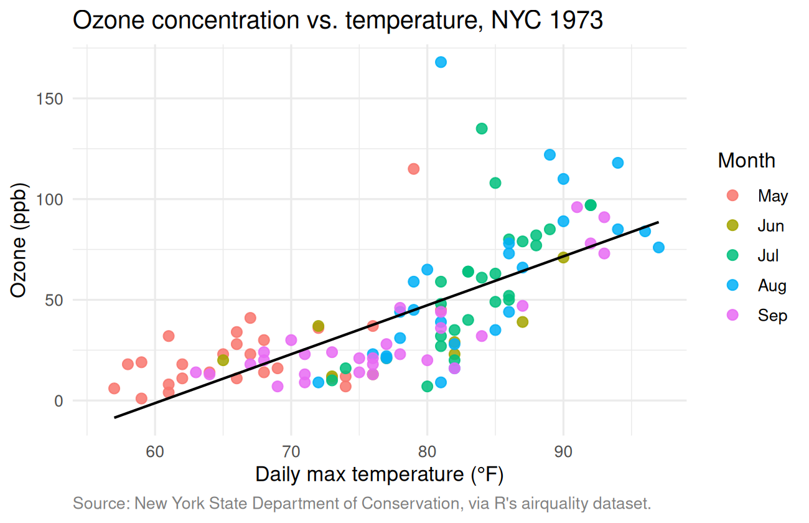
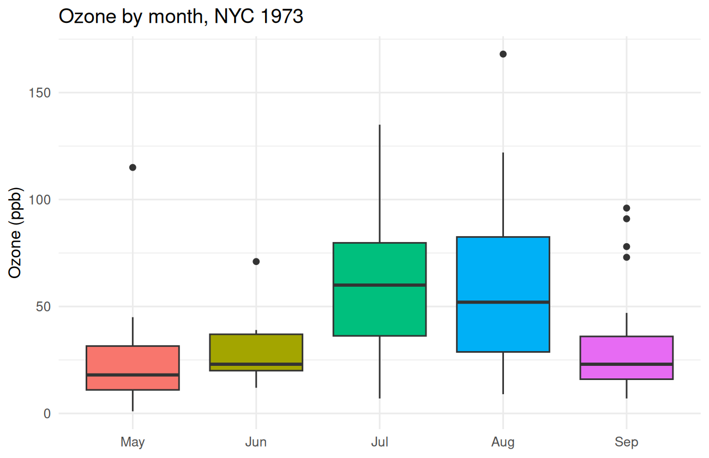
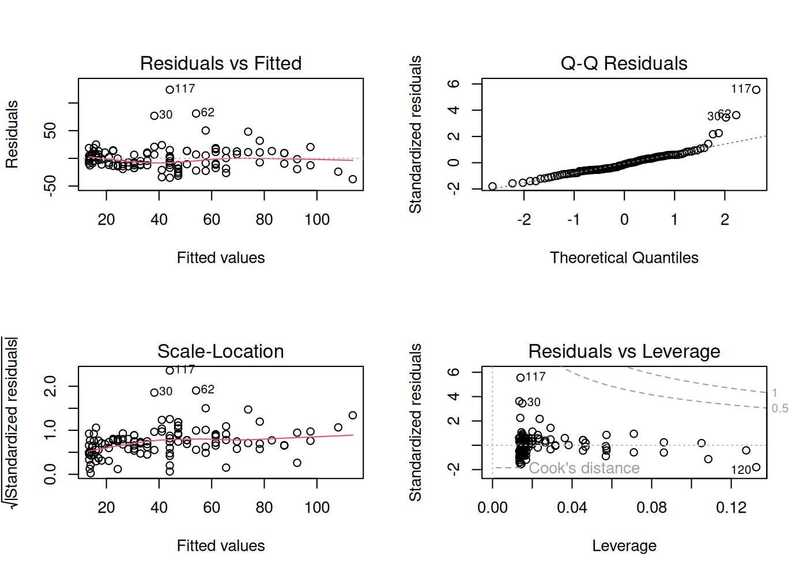
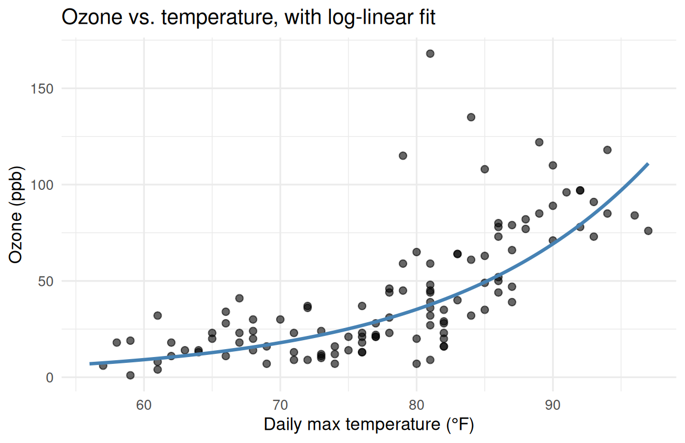

Lesson 7 of 7 · Course overview
Time to put it all together. We’ll walk through a complete mini-analysis — the kind of thing you might do as a first pass on a real-world dataset. Every step uses something from a previous lesson:
The dataset is airquality — a built-in R dataset of
daily air-quality measurements from New York City, May–September 1973.
It’s small (153 days), it has missing values, and it has both numeric
and categorical variables. Realistic enough to be useful, small enough
to fit on this page.
Does ozone concentration in NYC depend on temperature, and if so, how much?
That gives us a clear target variable (ozone), a candidate predictor (temperature), and a real comparison to make. Along the way we’ll also peek at how ozone varies by month.
airquality is built into R, so no download needed. Let’s
get a clean tibble with proper dates.
library(dplyr)
library(tidyr)
library(ggplot2)
aq <- airquality |>
tibble::as_tibble() |>
mutate(
date = as.Date(paste("1973", Month, Day, sep = "-")),
Month = factor(Month,
levels = 5:9,
labels = c("May", "Jun", "Jul", "Aug", "Sep")
)
)
aq#> # A tibble: 153 × 7
#> Ozone Solar.R Wind Temp Month Day date
#> <int> <int> <dbl> <int> <fct> <int> <date>
#> 1 41 190 7.4 67 May 1 1973-05-01
#> 2 36 118 8 72 May 2 1973-05-02
#> 3 12 149 12.6 74 May 3 1973-05-03
#> 4 18 313 11.5 62 May 4 1973-05-04
#> 5 NA NA 14.3 56 May 5 1973-05-05
#> 6 28 NA 14.9 66 May 6 1973-05-06
#> 7 23 299 8.6 65 May 7 1973-05-07
#> 8 19 99 13.8 59 May 8 1973-05-08
#> 9 8 19 20.1 61 May 9 1973-05-09
#> 10 NA 194 8.6 69 May 10 1973-05-10
#> # ℹ 143 more rowsTwo real-world things just happened:
date column from the
Year/Month/Day parts using
as.Date() and paste().Month into a factor with sensible labels, so
plots and tables show “Jul” instead of 7.Always start with summary() and a count of missing
values:
summary(aq)#> Ozone Solar.R Wind Temp Month
#> Min. : 1.0 Min. : 7 Min. : 1.70 Min. :56.0 May:31
#> 1st Qu.: 18.0 1st Qu.:116 1st Qu.: 7.40 1st Qu.:72.0 Jun:30
#> Median : 31.5 Median :205 Median : 9.70 Median :79.0 Jul:31
#> Mean : 42.1 Mean :186 Mean : 9.96 Mean :77.9 Aug:31
#> 3rd Qu.: 63.2 3rd Qu.:259 3rd Qu.:11.50 3rd Qu.:85.0 Sep:30
#> Max. :168.0 Max. :334 Max. :20.70 Max. :97.0
#> NAs :37 NAs :7
#> Day date
#> Min. : 1.0 Min. :1973-05-01
#> 1st Qu.: 8.0 1st Qu.:1973-06-08
#> Median :16.0 Median :1973-07-16
#> Mean :15.8 Mean :1973-07-16
#> 3rd Qu.:23.0 3rd Qu.:1973-08-23
#> Max. :31.0 Max. :1973-09-30
#> aq |>
summarise(across(everything(), ~ sum(is.na(.x))))#> # A tibble: 1 × 7
#> Ozone Solar.R Wind Temp Month Day date
#> <int> <int> <int> <int> <int> <int> <int>
#> 1 37 7 0 0 0 0 0Two things jump out:
Ozone has 37 missing values out of 153 days (about
24%).Solar.R has a few missing too. Temperature and wind are
complete.Missing data isn’t necessarily a problem — but you have to know it’s
there. R’s modeling functions handle NA differently
depending on the function, and most plots silently drop missing
rows.
Before fitting any model, look at the data. A scatterplot of ozone vs. temperature, colored by month:
ggplot(aq, aes(x = Temp, y = Ozone, color = Month)) +
geom_point(size = 2.5, alpha = 0.85) +
geom_smooth(method = "lm", se = FALSE, color = "black", linewidth = 0.7) +
labs(
title = "Ozone concentration vs. temperature, NYC 1973",
x = "Daily max temperature (°F)",
y = "Ozone (ppb)",
color = "Month",
caption = "Source: New York State Department of Conservation, via R's airquality dataset."
) +
theme_minimal(base_size = 12) +
theme(plot.caption = element_text(color = "grey50", hjust = 0))
Two observations from this plot alone:
Let’s also look at ozone by month directly:
ggplot(aq, aes(x = Month, y = Ozone, fill = Month)) +
geom_boxplot() +
labs(
title = "Ozone by month, NYC 1973",
x = NULL, y = "Ozone (ppb)"
) +
theme_minimal() +
theme(legend.position = "none")
July and August are noticeably higher and have a wider spread.
aq |>
group_by(Month) |>
summarise(
n = n(),
n_missing = sum(is.na(Ozone)),
mean_ozone = mean(Ozone, na.rm = TRUE),
median_ozone = median(Ozone, na.rm = TRUE),
sd_ozone = sd(Ozone, na.rm = TRUE),
.groups = "drop"
)#> # A tibble: 5 × 6
#> Month n n_missing mean_ozone median_ozone sd_ozone
#> <fct> <int> <int> <dbl> <dbl> <dbl>
#> 1 May 31 5 23.6 18 22.2
#> 2 Jun 30 21 29.4 23 18.2
#> 3 Jul 31 5 59.1 60 31.6
#> 4 Aug 31 5 60.0 52 39.7
#> 5 Sep 30 1 31.4 23 24.1July and August have mean ozone roughly 2× the May/September values. May has the most missing days (probably equipment ramp-up at the start of the season, but we’d want to ask).
Are July ozone levels different from September? Quick t-test:
jul_sep <- aq |> filter(Month %in% c("Jul", "Sep"))
t.test(Ozone ~ Month, data = jul_sep)#>
#> Welch Two Sample t-test
#>
#> data: Ozone by Month
#> t = 3.6, df = 47, p-value = 0.0007
#> alternative hypothesis: true difference in means between group Jul and group Sep is not equal to 0
#> 95 percent confidence interval:
#> 12.26 43.07
#> sample estimates:
#> mean in group Jul mean in group Sep
#> 59.12 31.45The mean July ozone is about 50 ppb higher than September, with a tight 95% CI. The p-value is tiny — well below any reasonable threshold for “different.”
Linear regression: predict ozone from temperature. Because the relationship in the scatterplot looked curved, let’s fit two models and compare.
fit_linear <- lm(Ozone ~ Temp, data = aq)
fit_quadratic <- lm(Ozone ~ Temp + I(Temp^2), data = aq)
summary(fit_linear)#>
#> Call:
#> lm(formula = Ozone ~ Temp, data = aq)
#>
#> Residuals:
#> Min 1Q Median 3Q Max
#> -40.73 -17.41 -0.59 11.31 118.27
#>
#> Coefficients:
#> Estimate Std. Error t value Pr(>|t|)
#> (Intercept) -146.995 18.287 -8.04 0.00000000000094 ***
#> Temp 2.429 0.233 10.42 < 0.0000000000000002 ***
#> ---
#> Signif. codes: 0 '***' 0.001 '**' 0.01 '*' 0.05 '.' 0.1 ' ' 1
#>
#> Residual standard error: 23.7 on 114 degrees of freedom
#> (37 observations deleted due to missingness)
#> Multiple R-squared: 0.488, Adjusted R-squared: 0.483
#> F-statistic: 109 on 1 and 114 DF, p-value: <0.0000000000000002summary(fit_quadratic)#>
#> Call:
#> lm(formula = Ozone ~ Temp + I(Temp^2), data = aq)
#>
#> Residuals:
#> Min 1Q Median 3Q Max
#> -37.62 -12.51 -2.74 9.68 123.91
#>
#> Coefficients:
#> Estimate Std. Error t value Pr(>|t|)
#> (Intercept) 305.4858 122.1218 2.50 0.01380 *
#> Temp -9.5506 3.2080 -2.98 0.00356 **
#> I(Temp^2) 0.0781 0.0209 3.74 0.00029 ***
#> ---
#> Signif. codes: 0 '***' 0.001 '**' 0.01 '*' 0.05 '.' 0.1 ' ' 1
#>
#> Residual standard error: 22.5 on 113 degrees of freedom
#> (37 observations deleted due to missingness)
#> Multiple R-squared: 0.544, Adjusted R-squared: 0.536
#> F-statistic: 67.5 on 2 and 113 DF, p-value: <0.0000000000000002The quadratic model has a noticeably higher R-squared and a
significant I(Temp^2) coefficient, confirming what the
scatterplot suggested: ozone grows faster than linearly with
temperature.
Compare the two models formally:
anova(fit_linear, fit_quadratic)#> Analysis of Variance Table
#>
#> Model 1: Ozone ~ Temp
#> Model 2: Ozone ~ Temp + I(Temp^2)
#> Res.Df RSS Df Sum of Sq F Pr(>F)
#> 1 114 64110
#> 2 113 57038 1 7072 14 0.00029 ***
#> ---
#> Signif. codes: 0 '***' 0.001 '**' 0.01 '*' 0.05 '.' 0.1 ' ' 1Tiny p-value — the quadratic term is pulling weight. Use the quadratic model.
Before trusting the model, check the standard diagnostic plots:
par(mfrow = c(2, 2))
plot(fit_quadratic)
par(mfrow = c(1, 1))Things to notice:
Ozone would
probably help.A quick sanity-check fit on the log scale:
fit_log <- lm(log(Ozone) ~ Temp, data = aq)
summary(fit_log)#>
#> Call:
#> lm(formula = log(Ozone) ~ Temp, data = aq)
#>
#> Residuals:
#> Min 1Q Median 3Q Max
#> -2.1447 -0.3309 0.0296 0.3651 1.4942
#>
#> Coefficients:
#> Estimate Std. Error t value Pr(>|t|)
#> (Intercept) -1.83797 0.45100 -4.08 0.000085 ***
#> Temp 0.06750 0.00575 11.74 < 0.0000000000000002 ***
#> ---
#> Signif. codes: 0 '***' 0.001 '**' 0.01 '*' 0.05 '.' 0.1 ' ' 1
#>
#> Residual standard error: 0.585 on 114 degrees of freedom
#> (37 observations deleted due to missingness)
#> Multiple R-squared: 0.547, Adjusted R-squared: 0.543
#> F-statistic: 138 on 1 and 114 DF, p-value: <0.0000000000000002Better — R-squared bumps up, and on the log scale a single linear
term captures most of what the quadratic was doing on the original
scale. The coefficient Temp = 0.0675 means each 1°F
increase in temperature is associated with roughly a 7% increase in
ozone.
What ozone level does the log-scale model predict for a hypothetical 90°F day?
pred <- predict(
fit_log,
newdata = tibble::tibble(Temp = 90),
interval = "prediction"
)
exp(pred)#> fit lwr upr
#> 1 69.22 21.45 223.4About 69 ppb, with a wide prediction interval — single-day variation is genuinely large.
Visualize the fitted relationship on the original scale:
grid <- tibble::tibble(Temp = seq(min(aq$Temp), max(aq$Temp), length.out = 100))
grid$pred_log <- predict(fit_log, newdata = grid)
grid$pred <- exp(grid$pred_log)
ggplot(aq, aes(x = Temp, y = Ozone)) +
geom_point(alpha = 0.6, size = 2) +
geom_line(data = grid, aes(y = pred), color = "steelblue", linewidth = 1.1) +
labs(
title = "Ozone vs. temperature, with log-linear fit",
x = "Daily max temperature (°F)",
y = "Ozone (ppb)"
) +
theme_minimal(base_size = 12)
This is what would go in a one-paragraph “results” section of a report:
Daily ozone concentration in New York City in summer 1973 increased sharply with temperature. A simple linear regression of ozone on temperature explained roughly 49% of the variation; allowing for a quadratic term, or equivalently fitting on the log scale, raised that to about 55%. The log-scale model implies each additional 1°F is associated with roughly a 7% increase in ozone, with substantial day-to-day variation around that trend. July and August had mean ozone roughly twice as high as May and September.
That’s a real result, expressed in plain language, with the numbers tied directly back to the analysis. If the data updated, every number would update too.
Wrap the whole thing in an R Markdown file. Save the chunks above
into a single .Rmd, add a YAML header, and knit. Now you
have a self-contained, runnable, shareable analysis.
---
title: "NYC Ozone vs. Temperature, Summer 1973"
author: "Your Name"
date: "`r Sys.Date()`"
output:
html_document:
toc: true
toc_float: true
code_folding: show
---If you got this far, you can do real work in R. Some good next steps:
lubridate (dates),
stringr (strings), forcats (factors),
broom (tidying model output), gt or
kableExtra (publication-quality tables),
plotly (interactive plots).usethis::create_package() is a one-liner.The R community is friendly and active — questions on Stack Overflow and the Posit Community forum usually get good answers within hours, especially if you include a small reproducible example.
Thanks for working through the course. If anything was unclear, broken, or could be better, email me at cavandonohoe@gmail.com or open an issue on GitHub. Real feedback makes this a lot better for the next person.
Now go make something with it.